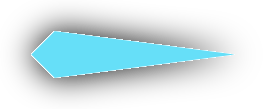

Instagram — это популярное приложение для обмена фотографиями, которое было создано Кевином Систромом и Майком Кригером и запущено в октябре 2010 года.
Instagram был одним из первых приложений, предложивших функцию фильтров для обработки фотографий, которые позволяли пользователям превратить свои обычные снимки в профессионально выглядящие изображения. Это, вместе с простым интерфейсом и возможностью легко делиться фотографиями с другими социальными сетями, привело к его быстрому росту и популярности.
С течением времени Instagram добавлял новые функции, такие как возможность размещения видео в июне 2013 года, введение Instagram Direct в декабре 2013 года (что позволяло пользователям отправлять фотографии и сообщения напрямую другим пользователям), а также введение историй Instagram в августе 2016 года, похожих на функцию Snapchat.
Instagram также играл важную роль в культуре "инфлюенсеров", предоставляя платформу для пользователей, чтобы продвигать бренды и продукты и зарабатывать деньги.
ВКонтакте — это крупнейшая социальная сеть в России и СНГ, основанная в 2006 году Павлом Дуровым.
ВКонтакте был создан как русскоязычный аналог Facebook и ориентировался на студентов российских университетов. Изначально сайт был доступен только для студентов высших учебных заведений Санкт-Петербурга, но вскоре расширился и стал доступен для всех пользователей интернета.
ВКонтакте быстро стал популярным благодаря своей функциональности, которая включала возможность обмена сообщениями, создание групп, загрузку и просмотр фотографий и видео, а также прослушивание музыки онлайн.
Особенно популярна была функция музыкального плеера, который позволял пользователям загружать, прослушивать и обмениваться музыкой. Это, однако, привело к нескольким юридическим спорам с правообладателями музыки.
В апреле 2014 года Дуров продал свою долю в компании и покинул ее. ВКонтакте стал частью Mail.Ru Group, одной из крупнейших интернет-компаний в России.
С течением времени ВКонтакте продолжал внедрять новые функции, такие как поддержка 360-градусных видео и live-трансляций, улучшенную систему рекомендаций и другие.
Одноклассники — это одна из крупнейших социальных сетей в России, основанная в марте 2006 года Альбертом Попковым.
Сайт изначально был создан как платформа для воссоединения бывших одноклассников и друзей. Однако, со временем он развился в полноценную социальную сеть с большим количеством функций, включая обмен сообщениями, создание групп, загрузку и просмотр фотографий и видео, а также прослушивание музыки онлайн.
Одним из отличительных особенностей Одноклассников является тот факт, что большинство его пользователей — это люди старшего возраста. Это отличает его от других популярных российских социальных сетей, таких как "ВКонтакте".
В мае 2008 года Mail.Ru Group приобрела Одноклассники. С тех пор сайт продолжает развиваться под управлением этой компании.
С течением времени Одноклассники продолжали внедрять новые функции, включая поддержку live-трансляций, улучшенную систему рекомендаций, а также внедрение игр и других развлекательных приложений.
Telegram — это приложение для обмена сообщениями, основанное братьями Дуровыми: Павлом и Николаем. Павел Дуров известен как основатель крупнейшей социальной сети в России, ВКонтакте.
Работа над Telegram началась в 2013 году, а официальный запуск приложения состоялся 14 августа 2013 года. Основная идея Telegram заключалась в предоставлении безопасного и быстрого способа обмена сообщениями.
Telegram отличается от многих других приложений для обмена сообщениями своим фокусом на приватность и безопасность. Все сообщения в Telegram зашифрованы, а также предлагаются функции, такие как "секретные чаты", которые позволяют пользователям настроить самоуничтожение сообщений после определенного периода времени.
Одной из ключевых особенностей Telegram является поддержка каналов и ботов. Каналы позволяют пользователям и организациям распространять сообщения большой аудитории, а боты предлагают автоматизированные инструменты для взаимодействия с пользователями.
С течением времени Telegram добавлял новые функции, такие как поддержка голосовых звонков (введена в 2017 году), видеозвонков (2020 год) и групповых видеозвонков (2021 год).
Telegram также стал популярным инструментом для многих активистов и журналистов по всему миру из-за своего фокуса на безопасность и приватность.
YouTube — это популярный веб-сайт для обмена видео, который был основан в феврале 2005 года троицей бывших сотрудников PayPal: Чадом Херли, Стивом Ченом и Джаведом Каримом.
Первое видео на YouTube, названное "Me at the zoo" («Я в зоопарке»), было загружено 23 апреля 2005 года одним из сооснователей, Джаведом Каримом.
YouTube быстро стал популярным, привлекая миллионы пользователей, которые загружали и просматривали видео на всевозможные темы. В ноябре 2006 года Google приобрела YouTube за 1,65 миллиарда долларов в акциях.
С тех пор YouTube стал одной из самых посещаемых веб-страниц в мире, а также крупнейшим в мире сайтом для обмена видео. YouTube предлагает множество функций, включая поддержку видео высокого разрешения, возможность прямых трансляций, поддержку 360-градусных видео, а также возможность монетизации для создателей контента через партнерскую программу YouTube.
В последние годы YouTube также стал платформой для "инфлюенсеров", людей, которые используют свою популярность на платформе для продвижения брендов и продуктов.
Twitter — это популярный сервис микроблогов, основанный в марте 2006 года Джеком Дорси, Ноахом Глассом, Бизом Стоуном и Эваном Уильямсом. Сервис был запущен в июле 2006 года.
Twitter позволяет пользователям отправлять и читать короткие сообщения, известные как "твиты", которые изначально были ограничены 140 символами, но позже, в 2017 году, лимит был увеличен до 280 символов.
Twitter быстро стал популярным и получил широкое распространение во всем мире. Одной из ключевых особенностей Twitter является использование хэштегов (#), которые позволяют пользователям легко отслеживать и участвовать в обсуждениях определенных тем.
Twitter также стал важной платформой для новостей и политического дискурса. Многие знаменитости, политики и другие общественные личности активно используют Twitter для общения с фанатами и избирателями, а также для объявления о важных новостях и событиях.
С течением времени Twitter добавил новые функции, такие как встроенные гифки, поддержка видео, возможность проведения опросов, а также функция "моменты", которая позволяет пользователям собирать и делиться серией твитов на определенную тему.
Facebook — это одна из самых крупных социальных сетей в мире, основанная Марком Цукербергом и его сокурсниками из Гарвардского университета — Эдуардом Саверином, Эндрю Макколлумом, Дастином Московицем и Крисом Хьюзом. Официальный запуск Facebook состоялся 4 февраля 2004 года.
Изначально Facebook был доступен только для студентов Гарвардского университета, но вскоре расширился и стал доступен для других университетов. В конце 2004 года Facebook имел более миллиона активных пользователей. В 2006 году Facebook стал доступен для всех, кто старше 13 лет и имеет действительный адрес электронной почты.
Facebook быстро стал популярным благодаря своей функциональности, которая включала возможность обмена сообщениями, создание групп, загрузку и просмотр фотографий и видео, а также прослушивание музыки онлайн.
С течением времени Facebook продолжал внедрять новые функции, такие как новостная лента (News Feed, 2006 год), Like button (кнопка "Нравится", 2009 год), и Facebook Timeline (2011 год). Компания также расширила свою деятельность, приобретя такие компании, как Instagram в 2012 году и WhatsApp в 2014 году.
Facebook играл важную роль в общественной жизни, включая политические кампании и социальные движения. Однако компания столкнулась с критикой в отношении приватности данных, фейковых новостей и цензуры.
Pinterest — это социальная сеть, основанная Беном Сильберманном, Полом Скарром и Эваном Шарпом в декабре 2009 года. Официальный запуск сервиса состоялся в марте 2010 года.
Идея Pinterest заключается в создании виртуальных досок объявлений, на которые пользователи могут "прикреплять" изображения и другие объекты из Интернета. Эти коллекции изображений, или "pins", могут быть организованы по темам, таким как рецепты, домашний декор, мода и многое другое. Пользователи могут также "репинивать" изображения других пользователей на свои собственные доски.
Pinterest быстро стал популярным, особенно среди женщин и людей, ищущих вдохновение для различных проектов и идей. Сайт также стал значимой платформой для брендов и рекламодателей, которые используют его для продвижения своих продуктов и услуг.
С течением времени Pinterest добавил новые функции, включая поддержку видео, интеграцию с электронной коммерцией, а также инструменты для создания и редактирования изображений.
В апреле 2019 года Pinterest провел успешный IPO (первичное публичное предложение акций), став публичной компанией.